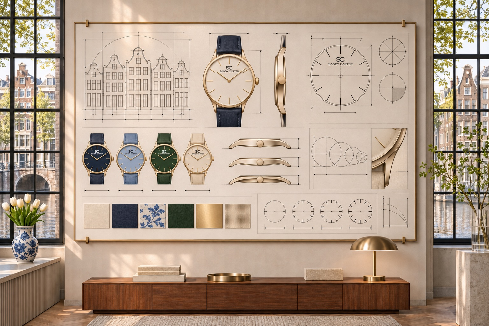

Timelessness
Coherent choices that can live beyond a temporary trend.
Our design philosophy
Born from a creative vision in Amsterdam, our philosophy brings together Dutch design sensibilities and a contemporary understanding of time.

True refinement does not demand attention. It earns it through proportion, purpose and character.
We begin with clarity: what the watch needs to communicate, how it should sit on the wrist and which details deserve to remain. Simplicity is not emptiness. It is the result of choosing carefully.
Coherent choices that can live beyond a temporary trend.
A disciplined edit that reveals character instead of removing it.
Dial, bezel, case, lugs and crown considered as one composition.
Typography, texture, colour and finishing used with intention.
Legibility, comfort and daily usefulness as part of the aesthetic.
Confidence expressed through restraint rather than excess.
A quiet point of view that makes each design recognisable.
Amsterdam’s architecture often brings old and new into the same frame. Dutch design culture pairs clear thinking with unexpected personality. Those ideas inform our approach without becoming a costume or a claim of manufacture.
Droog Amsterdam matters as the historical setting for the founding creative discussions. It did not manufacture, approve or officially endorse SANDY D. CARTER watches.
Materials and finishes will be specified model by model once the launch collection is approved. Our design direction favours contrasts that reveal form: brushed against polished, open space against fine markers, restrained colour against the natural character of metal or leather.
A timeless watch need not be anonymous. We look for the point at which an object feels calm but still personal—recognisable through its relationships, not through unnecessary decoration.
European watch-industry exposure, product thinking and the ambition to build an independent international brand.
Visual storytelling, confident composition and the belief that simplicity can still communicate personality.
Proportion, materials, finishing and timeless product thinking grounded in the watch category.
These contributions describe the original creative philosophy as supplied by the founder. They do not imply endorsements by the brands in Rajan’s or Sandy’s professional portfolios.
TIME. REFINED.